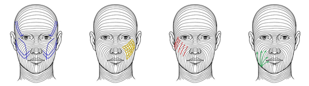

蛋白线中的成分是一种人体自身含有的蛋白质。将其通过特制的针头注入相应的皮肤褶皱或松弛处的胶原层，从而达到除皱、提升紧肤等效果。

皮肤松弛下垂，出现浅中层细纹、皱纹，肤质粗糙干燥，肤色暗淡哑黄，以及希望改善全面部、眼周、下颚、颈部、手臂、下肢、腰腹、臀部等出现松弛衰老症状的广大人群。

1.面部提升切口微小：不做大面积剥离，使面部提升术包扎时间和恢复时间大大缩短。最大程度上减少求美者的手术痛苦，一般情况下，只需3天就可以正常工作和生活。
2.采用专利器械：直接剥离颧弓韧带和部分下颌韧带，并把已经松弛的韧带折叠缝合。不会损伤皮下表浅神经和毛细血管，不会引起表皮紧绷，表情僵化，面具脸。
3.面部韧带提紧：使得面部整个组织包括皮肤，皮下组织，面部表情肌韧带等，都上移复位，避免了表皮过紧而皮下其他组织仍然松弛而引起的怪异的面部特征。
4.面部皮肤多重提升：提升眼角，提紧面颊赘肉，明显改善鼻唇沟皱纹，收紧下颌皮肤，部分提拉颈部松弛皮肤，改善颈部皱纹等效果。


1.安全可靠。采用绿色材料，纯天然，并含有高浓度的胶原蛋白纤维。组织相容性强，对人体无不良反应，无负担无过敏，无异物感。
2.无创快捷。无需开刀，无需注射，整个治疗过程只需半个小时左右，无创无痛、不需要恢复期和特殊护理。
3.效果持久。1-3天有效消除皱纹，迅速提升紧致肌肤，改善面部松弛下垂。1-3月达到完美，皮肤恢复弹、柔、滑、嫩、润的完美状态。
4.塑美、整形无“死角”。除了针对全面部提升除皱效果突出明显外，该技术同时有效收紧上臂和大腿皮肤、收腹、塑腰、提臀塑臀，全方位雕塑女性性感曲线。